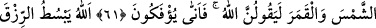

NASIL HAKTAN ÇEVRİLİP
DÖNDÜRÜLÜYORLAR?
52. De ki: Benimle sizin aranızda şâhid olarak Allah yeter. O, göklerde ve yerde
ne varsa bilir. Bâtıla inanıp Allah’ı inkâr edenler (var ya), işte ziyana uğrayacaklar
onlardır.
53. Senden, azâbı çarçabuk (getirmeni) istiyorlar. Eğer önceden tayin edilmiş bir
vâde olmasaydı, azap elbette onlara gelip çatmıştı. Fakat onlar farkında değilken, o
ansızın kendilerine geliverecektir.
54. (Evet) senden azâbı çarçabuk (getirmeni) istiyorlar. Hiç şüpheleri olmasın,
cehennem kâfirleri çepeçevre kuşatacaktır.
55. O günde azap, onları hem üstlerinden hem ayaklarının altından saracak ve
Allah (onlara): “Yaptıklarınızı (cezâsını) tadın!” diyecektir.